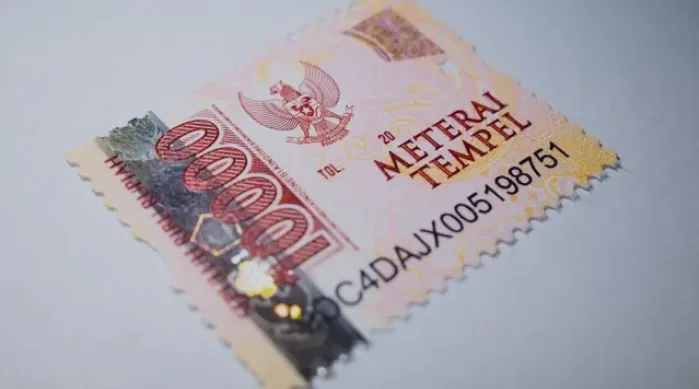
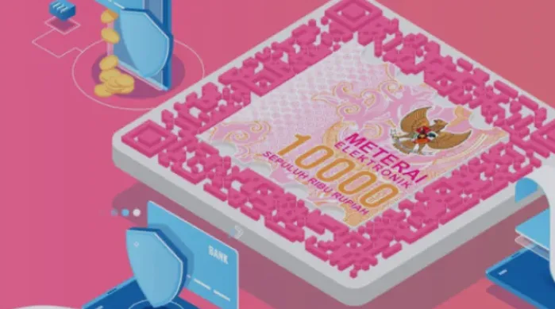
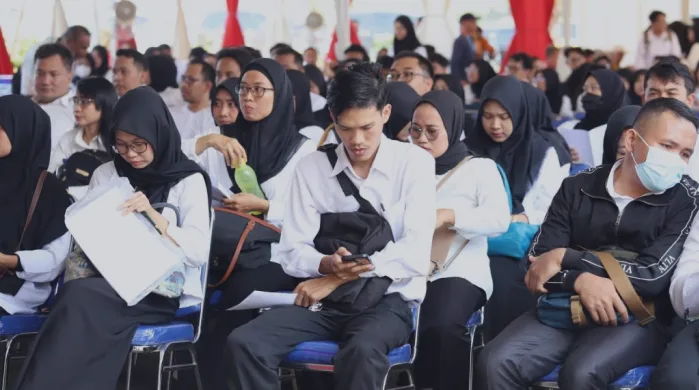
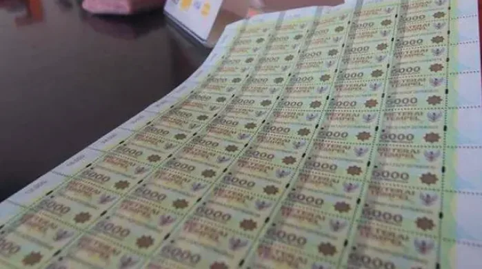
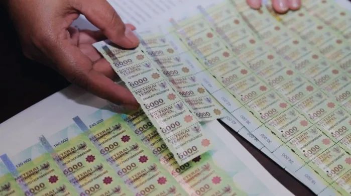
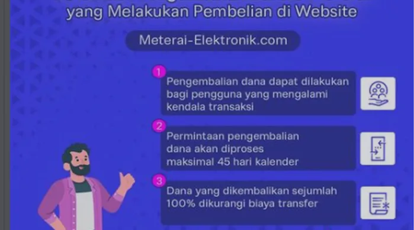
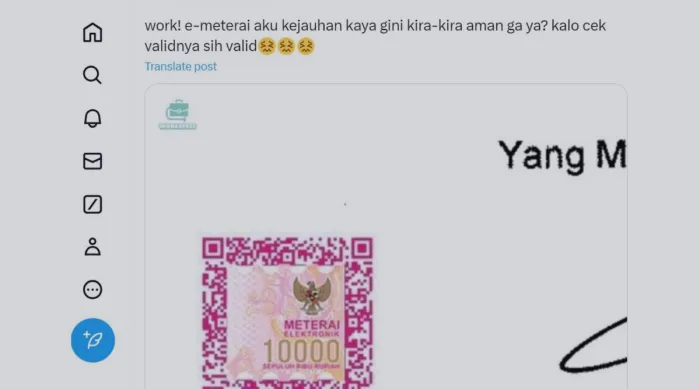
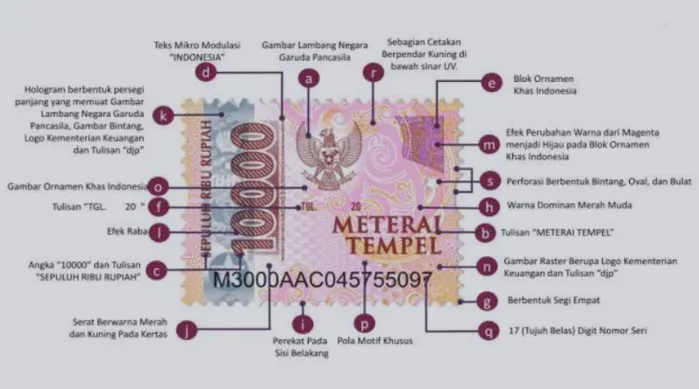

Aturan Bea Meterai Berubah, Begini Skema Barunya
Pendistribusian meterai elektronik untuk Pemungut Bea Meterai kini dilakukan langsung oleh Perum Peruri, bukan lagi lewat distributor.
Baca artikelAturan terbaru, panduan langkah demi langkah, dan jawaban untuk pertanyaan yang sering muncul.
9 artikel

Pendistribusian meterai elektronik untuk Pemungut Bea Meterai kini dilakukan langsung oleh Perum Peruri, bukan lagi lewat distributor.
Baca artikelDokumen sudah jadi dalam bentuk PDF, tetapi masih perlu meterai? Begini cara memeterainya tanpa mencetak dan memindai ulang.
Baca artikel
Meterai elektronik, atau e-Meterai, adalah jenis meterai yang dibubuhkan pada dokumen digital. Ini fungsi dan cara mendapatkannya.
Baca artikel
Peruri menyediakan meterai online untuk memudahkan pelamar. Berikut cara membeli dan memakainya agar berkas pendaftaran aman.
Baca artikel
Tidak semua dokumen dikenai Bea Meterai. Berikut empat contoh yang dikecualikan, supaya Anda tidak membayar yang tidak perlu.
Baca artikel
Karena berbagai hal, utang-piutang bisa menjadi sengketa. Untuk kasus ingkar janji, jalurnya tidak selalu pidana.
Baca artikel
Syarat penggunaan e-Meterai untuk CPNS dan ketentuan pengembalian dana bagi pembeli yang mengalami kendala transaksi.
Baca artikel
Letak e-Meterai menjadi salah satu hal penting yang harus diperhatikan. Bagaimana kalau posisinya terlalu jauh dari tanda tangan?
Baca artikel
Penggunaan meterai tempel harus diperhatikan pelamar calon CPNS. Cek enam hal ini sebelum menempel.
Baca artikelTidak ada artikel yang cocok.
Coba kata kunci lain, atau pilih kategori Semua.